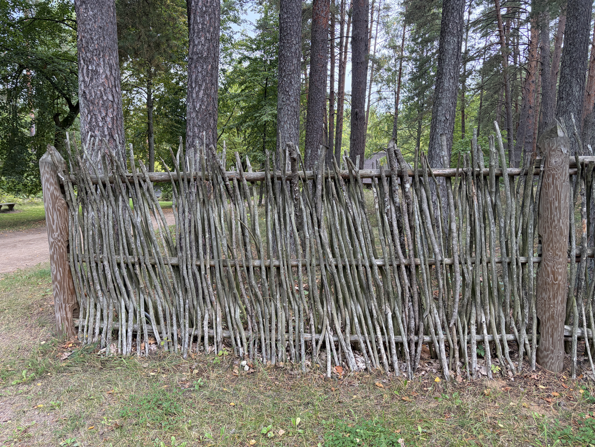

Dižlīķu klēts, Kuldīgas pagasts, 1767. Kurzemes gulbūves tipa divtelpu klēts ar lieveni. Kartēšana ir žogu konstrukcija Brīvdabas muzejā. Bibliotēka ir šīs ēkas būvelementi.
Žogi
Foto salikti pēc konstrukcijas. Tā ir kārtība, ko etnogrāfijā lieto Saulvedis Cimermanis un ko promocijas darbā apkopo Ineta Kurzemniece: žoga veidu izvēlas pēc tā, kāds darbs tam jādara.
01Sargāt sējumus, dārzus un stādījumus
02Virzīt lopus un braucamos
03Norobežot aplokus un laidarus
04Sakārtot sētas izskatu
Augstumi ir milimetros. Tabulā tie bija centimetri. Mazākais skaitlis ir žoga augstums, lielākais, ja tas ir, ir stabu vai augšējo elementu augstums.
Zedeņu žogs
Egļu vai paegļu zari pīti stāvus starp horizontālām kārtīm. Sens tips visā Latvijā, bieži ap ābeļdārziem, jo pinums aiztur lopus un izskatās sakopts. Prasa daudz darba un īpašu zaru materiālu, tāpēc 20. gs. kļuva retāks.
Foto 1 Kauguri, jūra · Kurzemežogs 1300 · stabi 1580pīti zari, kārklu vai līdzīgs siejums

1 · Kauguri · žogs 1300 · stabi 1580
Guļbaļķu žogs
Resni apaļkoki starp zemē ieraktiem stabiem. Stabos ir ielaisti baļķu gali, vai arī stabi stāv pa pāriem un baļķi tiem piesieti. Tādu žogu cēla mežiem bagātās vietās. Visilgāk tas saglabājies Kurzemē, Ziemeļvidzemē un Latgalē.
Dažas garas, tievākas apaļkoka kārtis uz mietiem. Mietu pārus senāk sasēja ar kārklu, bērza vai ievas rīkstīm. Koksnes vajag mazāk nekā guļbaļķu sienā, tāpēc šis tips pamazām nomainīja smagākos žogus. Parastais augstums ir 60–120 cm, aplokiem arī vairāk. Muzejā egļu kāršu žogus joprojām atjauno.
Vertikāli dēļi, latas vai pārsķelti mieti, nagloti pie šķērskokiem. Jaunāks tips, no 18. gs. muižās un vēlāk arī zemnieku sētās, kad nagla un zāģēts dēlis kļuva pieejami. Gali bieži ir smaili vai izgriezti, tāpēc žogam ir arī izskata darbs. Vārti ir tā paša būvēšanas veida aile, tikai rūpīgāka.
Tas nav stāvkoku žogs. Stāvkoki ir mieti, kas paši ierakti zemē. Šeit vertikālās daļas tur šķērskoki.
Foto 8 ir zems dārza žogs ap puķēm. Konstrukcija ir tā pati, darbs ir cits: sargāt stādījumu, nevis pagalmu.
Šajā izlasē Kurzeme ir zedeņi un kāršu žogs, Latgale ir guļbaļķi un naglots stāvžogs ar vārtiem. Tas ir novērojums par foto.
Būvelementi
Viena ēka, piecas grupas. Kokam un akmenim rādām garumu, platumu un biezumu vai diametru. Laukums un tilpums ir tikai niedru jumtam. Ziemeļu fasāde ir četri posmi, 6 + 6 + 4 + 6 = 22 baļķi.
Niedru jumts
123,1 m² · 36,9 m³
Garums 11,98 m, platums 8,95 m. Lievenis ir dienvidos, bet kore ir pa vidu visai apmalei, tāpēc abām garajām plaknēm ir vienāda projekcija: 8,95 / 2 = 4,475 m.
Kore no galiem ir ievilkta 2,50 m. Tas ir nolasīts no sarkanās līnijas. Kores garums ir 11,98 − 2 × 2,50 = 6,98 m.
Gala trijstūris neaizņem visu galu. Tā pamats ir 4,40 m pa vidu galam. Līdz stūrim paliek (8,95 − 4,40) / 2 = 2,28 m, un tie stūri pieder garajai plaknei.
Pacēlums no griezuma: 6,15 − 3,85 = 2,30 m.
Garās plaknes slīpne ir √(4,475² + 2,30²) = 5,03 m. Tabulas spāre 5,40 m ir garāka par šo ceļu no apmales līdz korei.
Gala plaknes slīpne ir √(2,50² + 2,30²) = 3,40 m. Tabulas 2,61 m spāres ir īsākas par šo, tās nav visa gala plakne.
Gala plakne horizontāli: 4,40 × 2,50 / 2 = 5,50 m². Slīpi: 5,50 × 3,40 / 2,50 = 7,48 m². Divas: 14,96 m².
Garā plakne horizontāli: 11,98 × 4,475 − 5,50 = 48,11 m². Slīpi: 48,11 × 5,03 / 4,475 = 54,08 m². Divas: 108,16 m².
Laukums = 108,16 + 14,96 = 123,1 m². Biezums 0,30 m. Tilpums = 123,1 × 0,30 = 36,9 m³. Tas ir seguma kārtas tilpums.
Elements
Sk.
Izmērs, mm
Augšējiem un apakšējiem spārnešiem nav garuma, slieksnim nav biezuma. Ēkas augstums tabulā ir 99 mm A pusē un 160 mm R pusē. Jumta augstums no zemes ir 2469 mm un 2560 mm. Ēkas augstuma skaitļus pirms slaida vajag pārbaudīt uz vietas.
Septiņi slaidi
Kreisā kolonna ir teksts uz slaida. Labā ir tas, ko pateikt. Kopā ap piecām minūtēm.
1
Uz slaida
Dižlīķu klēts, Kuldīgas pagasts, 1767. Kurzemes gulbūve. Divas telpas, lievenis. Pētījums: žogi muzejā un šīs ēkas elementi.
Šī ir Dižlīķu klēts no Kuldīgas pagasta, celta 1767. gadā. Tā ir Kurzemes gulbūves tipa divtelpu klēts ar lieveni. Ēku esam uzmērījuši. Pētījumā ir divas daļas: kā muzejā būvēti žogi, un no kādiem elementiem salikta šī klēts.
2
Uz slaida
Fokuss: konstrukcija. Cimermanis, 1996. Kurzemniece, 2002. Žogu izvēlas pēc uzdevuma. 9 foto, 4 tipi.
Žogus kārtojam pēc konstrukcijas. Etnogrāfs Saulvedis Cimermanis raksta četrus žoga darbus: sargāt dārzus un sējumus, virzīt lopus un braucamos, norobežot aplokus, sakārtot sētu. Konstrukciju izvēlējās pēc šī darba. Tipu aprakstu saliek Inetas Kurzemnieces 2002. gada darbs. Mūsu foto iekrīt četros tipos.
3
Uz slaida
Zedeņi · Kauguri · pīti zari Guļbaļķi · Krāslava · apaļkoki starp stabiem Kārts · Kuldīga · žogs 1000, stabi 1250 Stāvžogs · Latgale · dēļi un vārti, nagloti
Zedeņu žogs Kauguros ir zari, pīti stāvus starp kārtīm. Guļbaļķu žogs Krāslavā ir resni apaļkoki starp stabiem. Kāršu žogs Kuldīgā ir trīs tievākas kārtis, caurredzams: žogs 1000 milimetri, stabi 1250. Literatūrā parasti 60 līdz 120 centimetri. Stāvžogs Latgalē ir vertikāli dēļi vai mieti, nagloti pie šķērskokiem. Vārti ir tā paša tipa aile. Tas nav stāvkoku žogs, jo stāvkoki ir mieti, kas paši stāv zemē.
4
Uz slaida
Šajā izlasē Kurzeme: zedeņi un kārts. Latgale: guļbaļķi, stāvžogs, vārti. Mazākais skaitlis ir žogs, lielākais ir stabi. Milimetri.
Foto Kurzeme rāda zedeņus un kāršu žogu, Latgale rāda guļbaļķus un naglotu stāvžogu. To sakām tikai par savu izlasi. Kur ir divi augstumi, mazākais ir žoga augstums, lielākais ir stabu. Tabulā tie bija centimetri, šeit tie ir milimetri.
5
Uz slaida
Viena ēka, piecas grupas. Sienas, lievenis, pārsegumi, jumts, pamati. Ziemeļu siena: 6 + 6 + 4 + 6 = 22.
Bibliotēka ir vienas ēkas elementi. Kokam un akmenim rādām garumu, platumu un biezumu vai diametru. Ziemeļu fasāde ir četri posmi: seši, seši, četri un seši, kopā divdesmit divi baļķi. Laukumu un tilpumu rēķinām tikai niedru jumtam.
6
Uz slaida
Apmale 11,98 × 8,95 m. Kore 6,98 m. Garās plaknes 108,2 m², gali 15,0 m². 123,1 m². Biezums 30 cm. 123,1 × 0,30 = 36,9 m³.
Jumta apmale plānā ir 11,98 reiz 8,95 metri. Kore ir pa vidu, 6,98 metri, ievilkta divarpus metrus no galiem. Gala trijstūris ir 4,40 metri plats, stūri paliek garajām plaknēm. Kopā 123,1 kvadrātmetrs. Pie 30 centimetriem tilpums ir 36,9 kubikmetri.
7
Uz slaida
Tipi, nevis katrs baļķis: guļbaļķis, dēlis, spāre, lata, kolonna, akmens. Ēkas augstuma mērījums jāpārbauda.
Slaidos rādām tipus. Nākamie rasējumi ir seši: guļbaļķis, dēlis, spāre, lata, kolonna un akmens. Ēkas augstums tabulā ir 99 un 160 milimetri, blakus jumta augstumam ap divarpus metriem.
Avoti
Kurzemniece, I. Žogu nosaukumi latviešu valodas izloksnēs. Promocijas darbs. Rīga: Latvijas Universitāte, 2002. Grāmata 2008. Tipu apraksti un atsauces uz Cimermani un Bīlenšteinu. dspace.lu.lv
Cimermanis, S. Žoga četri uzdevumi un konstrukcijas izvēle pēc darba. 1996, citēts Kurzemnieces darbā, 14. lpp.
Bielenstein, A. Die Holzbauten und Holzgeräte der Letten. 1907. Guļbaļķu, kāršu un zedeņu būvēšanas apraksti, caur Kurzemnieci.
Žogs. Latviešu literārās valodas vārdnīcas avotu saraksta kopsavilkums ar tiem pašiem tipiem. epupa.valoda.lv/zogs
LVM. Egļu kāršu žoga atjaunošana Latvijas Etnogrāfiskajā brīvdabas muzejā. lvm.lv
Kuplais, M., citēts LSM: senajās sētās žogi no stabiem, kārtīm, akmeņiem; dēļu žogs ar naglām ienāk līdz ar rūpniecību. lsm.lv
Niedru Mājas. Klētij segums bieži 25 cm, dzīvojamai mājai 30 cm, slīpums no aptuveni 35°. niedrumajas.lv
Royal Reed. Dzīvojamai mājai 30 cm, klētij un lapenei 25 cm. royalreed.lv